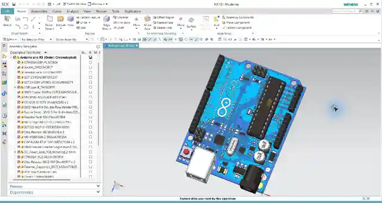
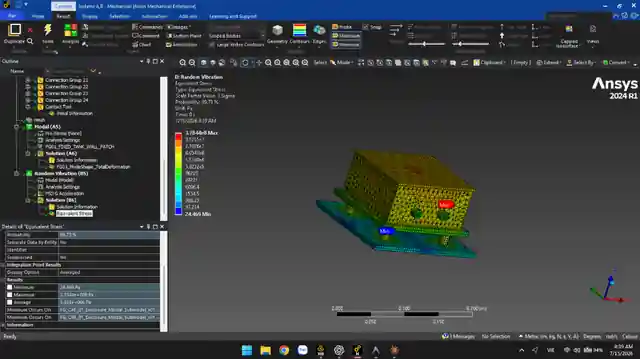
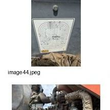
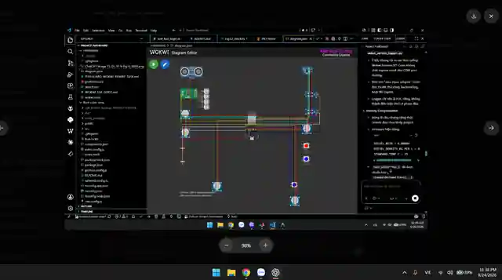

Automotive Engineering student at Ho Chi Minh City University of Technology (HCMUT), developing hands-on R&D experience through field investigation, Siemens NX, ANSYS and electronics-oriented prototyping in the context of FuelGuard.


Actual equipment observations are used as evidence of field-oriented engineering work, not as decorative thumbnails.

Field survey gives the R&D work a real operating context before moving into CAD, CAE and electronics.
Real NX screenshots are used to show practical software exposure rather than generic renders.
Working familiarity includes 3D modeling, assembly & constraints, drafting exposure, mechanical component design and CAD file handling. The focus is practical use and adapting engineering workflows as project needs change.
CAE complements CAD with a verification mindset: inspect results and use them to support design decisions.
FuelGuard is multidisciplinary, so electronics-oriented experimentation is shown as part of the same engineering story.

Prototype work explores sensor integration, controller I/O, signal/data flow and diagnostics-oriented monitoring. Programming is used at a basic engineering level, with AI tools used to accelerate workflows while outputs are manually reviewed and verified.